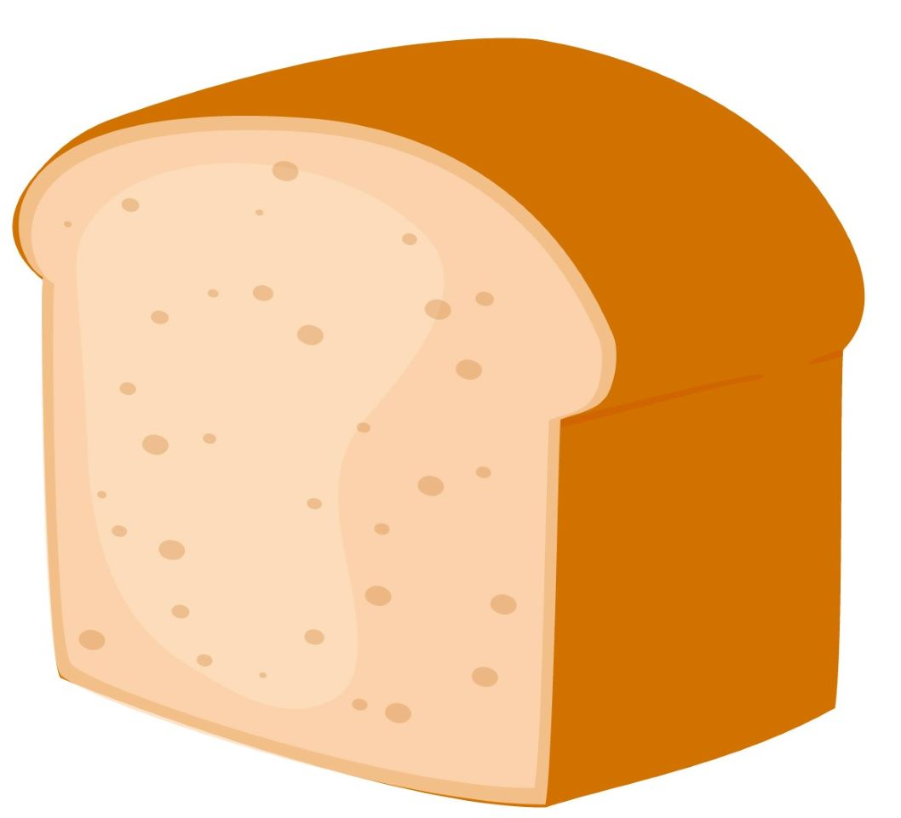
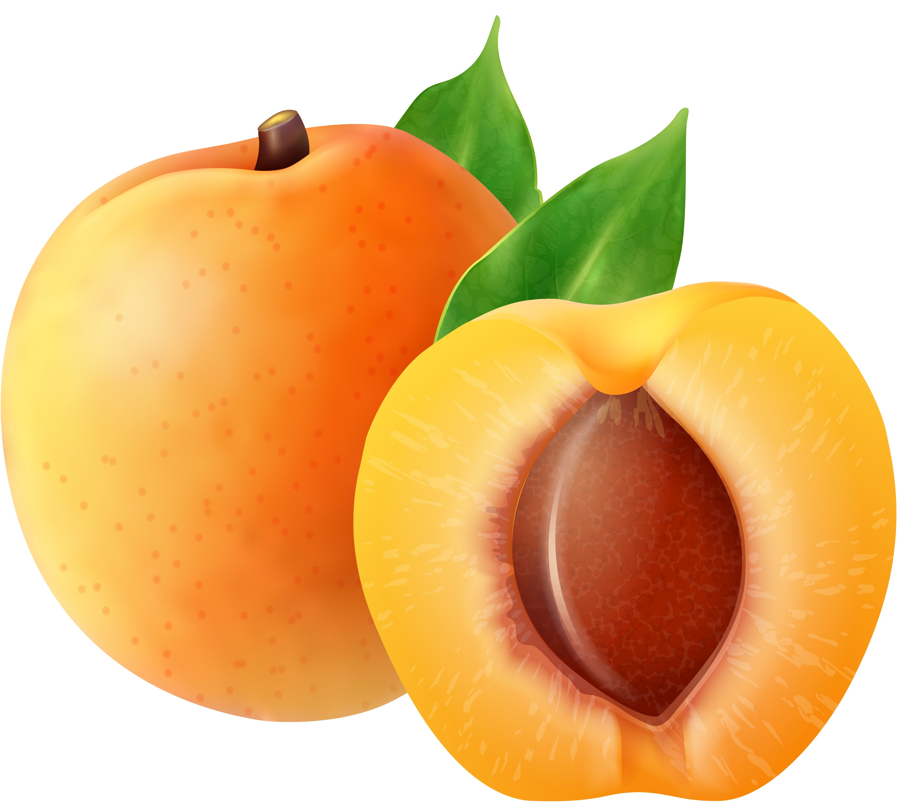
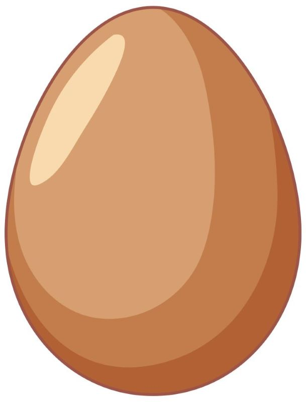
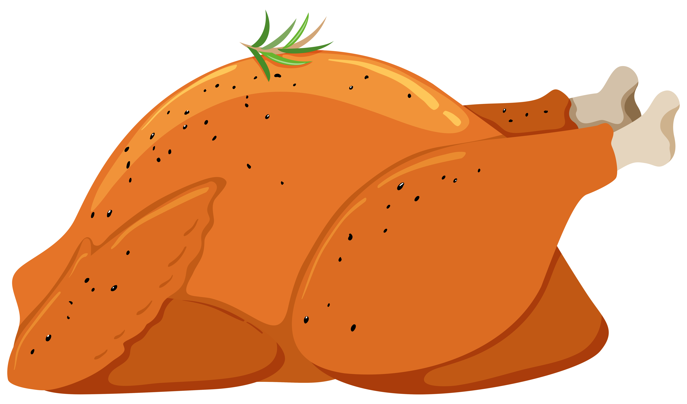
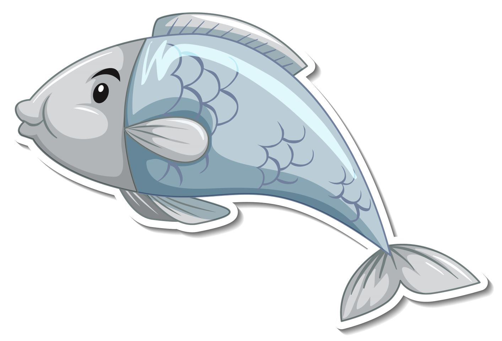
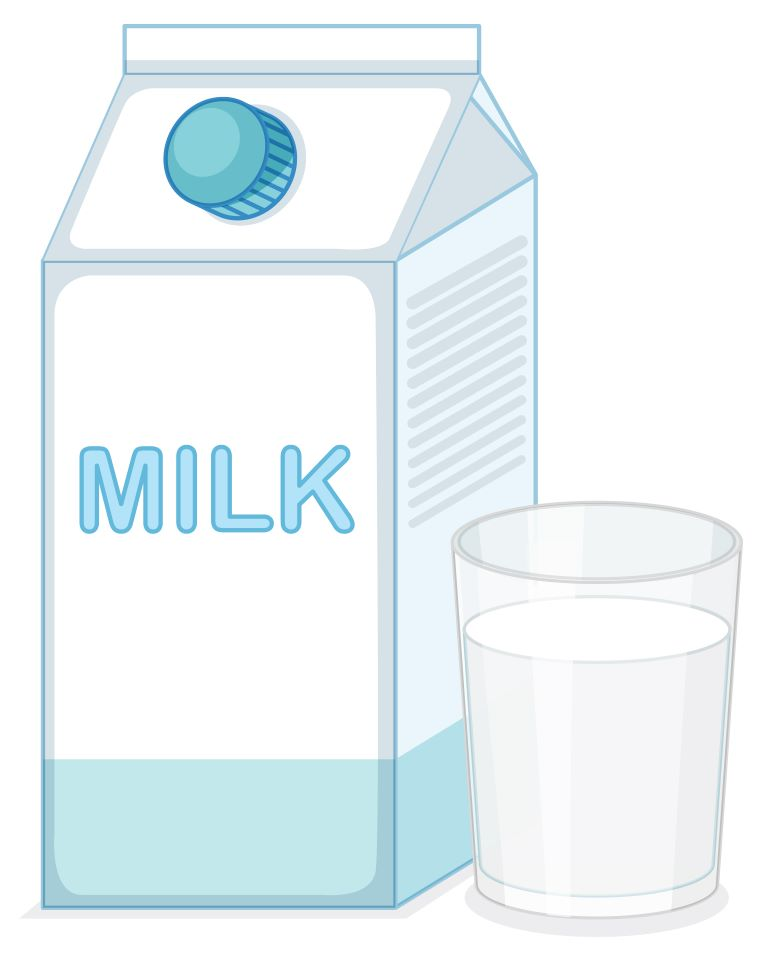

La situazione attuale in Italia
Quali sono le principali cause di decesso dei giovani in Italia? Quali sono i fattori che influenzano maggiormente la loro salute?
Quali sono le principali cause di decesso dei giovani in Italia? Quali sono i fattori che influenzano maggiormente la loro salute?
Nel 2020 diverse cause hanno contribuito ai decessi dei giovani. Tra queste, gli incidenti di trasporto si collocano al primo posto, seguiti da tumori, suicidi, malattie del sistema nervoso e degli organi di senso, leucemia e malattie del cuore.
Gli incidenti stradali, in particolare, sono stati responsabili di un significativo numero di morti tra i giovani. Questi incidenti tragici spesso sono causati da comportamenti rischiosi alla guida o da altre circostanze che coinvolgono i trasporti.
Anche i tumori rappresentano una causa significativa di decessi tra i giovani nel 2020. Il cancro può colpire organi e tessuti diversi e può avere effetti devastanti sulla vita di un giovane. La diagnosi precoce e il trattamento tempestivo sono cruciali per combattere i tumori-à e migliorare le prospettive di sopravvivenza.
Seguono i suicidi, spesso legati a problemi di salute mentale, stress, isolamento sociale e altri fattori psicologici.
Altro fattore rilevante sono le malattie del sistema nervoso, le quali possono includere condizioni neurologiche degenerative, come la sclerosi multipla o la malattia di Parkinson, che possono influire sulla qualità della vita e, in alcuni casi, portare alla morte.
La leucemia, una forma di cancro del sangue, rappresenta un'altra causa importante di decessi tra i giovani. Questa malattia colpisce il sistema ematopoietico e può comportare una serie di complicazioni che richiedono trattamenti intensivi come la chemioterapia o il trapianto di midollo osseo.
Infine abbiamo le malattie cardiache, che possono essere congenite o acquisite e possono portare a gravi problemi cardiaci e persino all'arresto cardiaco. È fondamentale adottare uno stile di vita sano, fare esami regolari e cercare cure tempestive per prevenire o gestire queste malattie.
Tutte queste cause possono avere un impatto significativo sulla vita dei giovani e richiedono un'attenzione adeguata per prevenire, diagnosticare e trattare tali condizioni in modo tempestivo ed efficace. La promozione della consapevolezza, la prevenzione e l'accesso alle cure adeguate sono fondamentali per proteggere la salute e il benessere dei giovani.
Gli incidenti stradali sono la causa primaria di morti premature in Italia: nel 2020 si registrano ben 586 morti attribuibili ad accidenti di trasporto.
Negli incidenti stradali i fattori coinvolti possono essere raggruppati in tre categorie: l'uomo, l'ambiente ed il veicolo.
L'uomo può adottare comportamenti errati e pericolosi quali l'eccesso di velocità, l'abuso di alcol e di sostanze stupefacenti, le distrazioni alla guida, ecc...
Tra questi è lo stato di ebbrezza uno dei fattori maggiormente associati agli incidenti stradali.
Nel 2020 gli incidenti stradali si sono registrati soprattutto tra il Nord e il Centro Italia, seguiti dalla Sicilia. Valori minimi in Molise e Basilicata.
Tra i fattori di rischio legati allo stato del conducente le categorie particolarmente rilevanti sono:
L'abuso di alcol tra i giovani è un problema sempre più diffuso che ha conseguenze devastanti sulla società.
Molti giovani spesso ricorrono all'alcol come mezzo per sfuggire agli stress della vita quotidiana, senza rendersi conto dei pericoli che ne derivano.
Le conseguenze negative del consumo di alcol sulla salute sono molteplici. Nella Classificazione Internazionale delle Malattie più di 30 categorie riguardano condizioni totalmente alcol-attribuibili.
I danni alcol-correlati non coinvolgono i soli consumatori ma anche le famiglie e la comunità in generale, a causa del deterioramento delle relazioni personali e di lavoro, dei comportamenti criminali (ad esempio vandalismo e violenza), della perdita di produttività e dei costi a carico dell’assistenza sanitaria.
Una delle conseguenze più gravi dell'abuso di alcol da parte dei giovani è la correlazione diretta con gli incidenti stradali. L'alcol influisce negativamente sulla capacità di guidare in modo sicuro e responsabile. Gli effetti dell'alcol sul sistema nervoso centrale rallentano i tempi di reazione, compromettono il coordinamento motorio e alterano la percezione delle distanze e dei rischi.
Di conseguenza, i giovani guidatori sotto l'influenza dell'alcol diventano un pericolo per se stessi e per gli altri utenti della strada.
Le statistiche dimostrano chiaramente la correlazione: dai dati forniti da Carabinieri e Polizia stradale si stima che gli incidenti stradali alcol-correlati in Italia siano pari al 10% degli incidenti mortali.
Negli incidenti causati da guida in stato di ubriachezza la stragrande maggioranza delle persone coinvolte è rappresentata da individui di sesso maschile, di cui il 33% giovani o giovani adulti di età compresa tra i 15 e i 34 anni.
Allo stesso modo la grande maggioranza dei decessi causati dall'abuso di alcol nei giovani riguarda gli uomini, nettamente inferiore è la percentuale relativa alle donne.
Seppur in minoranza, si è registrata negli ultimi venti anni una progressiva riduzione del numero di donne astemie. L'organismo femminile, a differenza di quello degli uomini, presenta una maggiore sensibilità e vulnerabilità fisiologica, legata anche a gravidanza e allattamento.
Nelle donne l'abuso di alcool può favorire lo sviluppo di tumori alla mammella ed incide negativamente sulla fertilità.
A livello di regioni italiane le prime per morti dovute ad abuso di alcol sono la Lombardia, il Piemonte, il Veneto e l'Emilia Romagna; i numeri più bassi si registrano invece nel Sud e nel Centro Italia.
Allo stesso modo i consumi di alcol tra i giovani sono diffusi in numero maggiore in Emilia-Romagna, Veneto e Friuli-Venezia Giulia; meno nel Sud Italia e in Sardegna.
La prevenzione dell'abuso di alcol e la riduzione degli incidenti stradali richiedono sforzi congiunti da parte delle famiglie, delle scuole, delle istituzioni e della società nel suo insieme. È fondamentale fornire ai giovani informazioni accurate sugli effetti dannosi dell'alcol, educarli riguardo alle decisioni responsabili e promuovere alternative salutari e gratificanti per gestire lo stress e le pressioni della vita. Inoltre, le leggi devono essere rigorosamente applicate per punire l'abuso di alcol e guida in stato di ebbrezza. Campagne di sensibilizzazione, controlli e programmi di riabilitazione possono contribuire a modificare le percezioni e i comportamenti dei giovani riguardo all'abuso di alcol.
Seppur non sia la causa principale delle morti dei giovani, nel 2020 se ne registrano infatti solamente 25, la dipendenza da droghe rimane un problema largamente diffuso tra i giovani.
Gli esperti descrivono il fenomeno come in continuo aumento e in grado di arrivare a coinvolgere anche ragazzini tra gli 11 e 14 anni.
Sono inoltre pochissimi i giovani che vanno nei centri spontaneamente.
Le sostanze stupefacenti sono tra i principali fattori di rischi per gli incidenti stradali. Nel 2020 il 3% di questi ultimi è stato causato dall'uso di droghe.
Dai dati sulle morti nel 2020 emerge che una nette maggioranza è relativa a uomini.
Il fenomeno dei suicidi tra giovani rappresenta una triste realtà, essendo una delle principali cause di morte prematura in questa fascia d'età.
Mentre la gioventù dovrebbe essere un periodo di scoperta, crescita e speranza, per molti giovani si trasforma in un'esperienza travagliata e dolorosa a causa di problemi di salute mentale.
I giovani affrontano una vasta gamma di pressioni, tra cui aspettative scolastiche, competizione sociale, problemi familiari e il costante utilizzo dei social media, che possono contribuire allo sviluppo di disturbi mentali come ansia e depressione.
La mancanza di un sostegno adeguato può peggiorare la situazione, lasciando i giovani vulnerabili e incapaci di far fronte a tali sfide.
Purtroppo, quando la sofferenza diventa insopportabile, alcuni giovani giungono a considerare il suicidio come l'unica via d'uscita dai loro tormenti interiori.
Nel 2020 il numero di suicidi è stato di: 465.
La prevenzione del suicidio tra i giovani richiede uno sforzo collettivo e costante. Governi, istituzioni, famiglie e comunità devono unire le forze per ridurre il tasso di suicidi e fornire una rete di sostegno solida e inclusiva per tutti i giovani in difficoltà.
18 %Giovani con abitudine al fumo nel 2022 |
25-34La classe d'età più coinvolta |
7.75Sigarette medie al giorno |
Il fumo nei giovani è un problema diffuso che comporta gravi conseguenze per la salute sia a breve che a lungo termine.
Le conseguenze del fumo sui giovani sono molteplici. In primo luogo, il fumo danneggia il sistema respiratorio: è infatti il principale fattore di rischio per malattie respiratorie non neoplastiche, come la broncopneumopatia cronica sotruttiva, asma e infezioni respiratorie ricorrenti.
Oltre agli effetti sul sistema respiratorio, il fumo nei giovani aumenta il rischio di sviluppare malattie cardiache precoci. Il tabacco contiene sostanze chimiche che danneggiano i vasi sanguigni e aumentano la pressione sanguigna, aumentando così il rischio di infarto e ictus.
Il fumo nei giovani è anche associato a un rischio maggiore di sviluppare vari tipi di cancro, come il cancro ai polmoni, al cavo orale e alla gola, all'esofago e alla vescica. Queste forme di cancro possono avere conseguenze devastanti sulla vita di una persona giovane, limitando le loro opportunità future e compromettendo la loro salute generale.
Oltre alle conseguenze fisiche, il fumo può anche influire negativamente sul benessere psicologico dei giovani. Alcuni studi hanno dimostrato che i giovani fumatori hanno maggiori probabilità di sviluppare disturbi dell'umore, come l'ansia e la depressione. Inoltre, il fumo può creare dipendenza dalla nicotina, rendendo difficile smettere di fumare una volta che l'abitudine si è stabilita.
Per combattere il problema del fumo tra i giovani, è essenziale fornire informazioni accurate sugli effetti negativi del fumo sulla salute. Programmi di prevenzione e campagne di sensibilizzazione possono aiutare a educare i giovani sui rischi del fumo e a promuovere stili di vita sani.
La maggior parte dei giovani fuma 5 sigarette al giorno, ma la media giornaliera è di ben 7.75.
Una corretta alimentazione e l'attività fisica sono elementi imprescindibili della salute dell'individuo.
Sovrappeso e obesità sono condizioni strettamente legate al rischio cardiovascolare.
I principali fattori di rischio cardiovascolare (pressione arteriosa, lipidi ematici e glicemia) sono infatti influenzati dall'eccesso di massa corporea e la perdita di peso (e dunque una riduzione dell'indice di massa corporea) influisce positivamente sui livelli di questi fattori,
diminuendo il pericolo di andare incontro a eventi cardiovascolari.
Tra i giovani comunque le percentuali sul consumo abituale di alimenti non scoraggiano:

il 76 %Consuma pane o pasta almeno una volta al giorno.
|

il 70 %Consuma frutta, vertura o ortaggi almeno una volta al giorno.
|

il 68 %Consuma uova almeno qualche volta alla settimana.
|

l'83 %Consuma carni bianche almeno una volta a settimana.
|

il 58 %Consuma pesce almeno una volta alla settimana.
|

il 45 %Consuma latte almeno una volta al giorno.
|